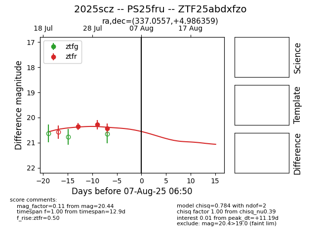

Target 2025scz at 2025-08-11 09:09, see:
FINK: fink-portal.org/2025scz
Lasair: lasair-ztf.lsst.ac.uk/objects/2025scz
ALeRCE: alerce.online/object/2025scz
TNS: wis-tns.org/object/2025scz
YSE: ziggy.ucolick.org/yse/transient_detail/2025scz
alt names
ZTF25abdxfzo (ztf,fink)
2025scz (tns,yse)
PS25fru (panstarrs)
coordinates:
equatorial (ra, dec) = (337.0557,+4.98636)
galactic (l, b) = (70.3437,-42.79972)
photometry
last ztfr=20.44
3 ztfr detections
